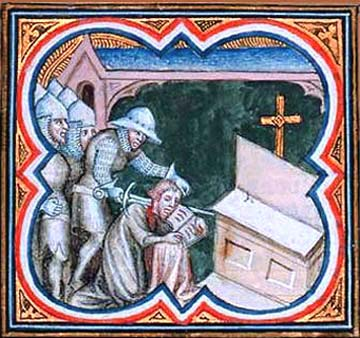

In 1127 the county of Flanders plunged into chaos almost overnight because of the murder of Charles the Good, the count of Flanders. He was slaughtered during prayer by Borsiard and others of his kin…
Then that raging Borsiard and his knights and servants, placing naked swords under their cloaks, pursued the count into the gallery, dividing themselves into two groups so that no one whom they wished to betray could flee either way out of the gallery. And behold! They saw the count seated humbly on a low stool next to alter as was his custom, where he was chanting psalms and devout prayers to God while simultaneously giving pennies to poor people.’
The count did not live to tell the tale. But he was not the only one to suffer from this incident. Because he was without a clear heir, and Flanders was a rich country with richer cities, the country quickly became the location of complete political chaos...
